How Every Agent Works — Verified from Source Code
| Category | Agents | Purpose |
|---|---|---|
| Analysis | Atlas Jr., Architect, Compass, Pulse, Oracle, Sentinel | Analyze market conditions |
| Decision | Tactician, Guardian, Nexus | Strategy selection & risk |
| Execution | Executor, Curator, Balancer | Order execution & data |
| Support | Chronicle, Insight, Arbiter | Logging, analytics, versioning |
The trading system follows a 9-stage pipeline before any order reaches the market. When a scan is triggered, Curator first checks data quality and determines which symbols are tradeable. For each tradeable pair, Compass classifies the current market regime (trending, ranging, breakout-ready). Then five specialist agents analyze the symbol in parallel: Atlas Jr. provides technical analysis and trend grades, Architect maps key support/resistance structures, Oracle assesses the macro outlook, Pulse gauges retail sentiment, and Sentinel flags upcoming event risks. This multi-agent analysis feeds into Tactician, which evaluates strategy templates and generates a setup only if its internal score reaches 70 or higher. The setup then passes through three screening gates: Guardian validates risk parameters and sizes the position, Balancer checks portfolio exposure limits, and Executor confirms the MT5 bridge is ready and spreads are acceptable. At Stage 8, the orchestrator calculates a confluence score (0-100) by weighting all agent inputs—this is the final decision gate requiring 75+ to execute. If approved, the order routes to Executor, which enforces six mandatory safety checks (stop loss required, no martingale, no averaging down, no duplicates, rate limits, Guardian re-approval) before writing the command to a JSON file bridge that the MT5 Expert Advisor reads, executes, and responds to with fill confirmation.
lifecycle.py)| Stage | Name | Agent | Purpose |
|---|---|---|---|
| 1 | Data Refresh | Curator | Check data quality, determine if symbol is tradeable |
| 2 | Regime Classification | Compass | Identify market regime (trending, ranging, breakout) |
| 3 | Multi-Agent Analysis | Atlas Jr, Architect, Oracle, Pulse, Sentinel | Parallel analysis from 5 specialists |
| 4 | Setup Generation | Tactician | Create trade setup if strategy score ≥70 |
| 5 | Risk Screening | Guardian | Position sizing, risk validation |
| 6 | Portfolio Screening | Balancer | Check exposure limits (<80%) |
| 7 | Execution Screening | Executor | Verify bridge ready, spread acceptable |
| 8 | Trade Decision | Nexus | Calculate confluence score, require ≥75 to execute |
| 9 | Order Routing | Executor → MT5 | Execute via file bridge to MT5 EA |
| Check | Threshold | Source |
|---|---|---|
| Tactician strategy score | ≥70 to generate setup | stage_setup_generation() |
| Guardian approval | All checks must pass | stage_risk_screening() |
| Portfolio exposure | <80% score | stage_portfolio_screening() |
| Bridge status | "READY" | stage_execution_screening() |
| Spread | ≤2.5 pips (majors), ≤4.0 pips (JPY) | stage_execution_screening() |
| Confluence score | ≥75 to execute | stage_trade_decision() |
Source: execution-agent/app.py:execute_order()
The system communicates with MetaTrader 5 via JSON files. The Executor writes commands, the MT5 EA reads and executes them, then writes results back.
Atlas Jr. is the direction decider for trend strategies. Its directional_lean output determines whether the system looks for LONG or SHORT setups in trending markets.
directional_lean: bullish / bearish / neutraltrend_grade: A / B / C / D / Fconfidence: 0-100mtf_alignment: ALIGNED_BULLISH / etcemas: {ema8, ema21, ema50, ema200}condition: normal / stretched / compressionentry_style: recommendation| Category | Indicators | Purpose |
|---|---|---|
| Trend | EMA 8, 21, 50, 200 | Direction and trend strength |
| Momentum | RSI (14), MACD, Stochastic | Overbought/oversold |
| Volatility | ATR (14), Bollinger Bands | Volatility state |
| Strength | ADX, +DI, -DI | Trend strength (>25 = trending) |
GET /api/analysis/{symbol} → Full analysis with all indicators
GET /api/indicators/{symbol} → Raw indicator values
GET / → Dashboard UIArchitect identifies WHERE price is in relation to key structural levels. Used by Range Fade strategies to determine direction (fade resistance/support) and by all strategies for stop placement.
structural_bias: bullish / bearish / neutralkey_zones[]: Array of S/R levels with freshnessfvgs[]: Array of Fair Value Gapsrecent_swings[]: HH, HL, LH, LL labelsinvalidation: {bullish, bearish} levelsliquidity_sweeps[]: Detected sweepsGET /api/structure/{symbol} → Full structure analysis
GET / → Dashboard UICompass determines WHAT TYPE of strategy is appropriate. Trending markets need trend-following; ranging markets need mean-reversion. Wrong strategy for regime = rejected.
primary_regime: trending / range_bound / etctradeable: true / falseconfidence: 0-100recommended_strategies[]blocked_strategies[]timeframe_regimes: Regime per timeframerisk_multiplier: Based on regime stability| Regime | Detection | Valid Strategies | Tradeable? |
|---|---|---|---|
| TRENDING | ADX > 25, clear HH/HL or LH/LL | Trend continuation, pullback | ✅ Yes |
| RANGE_BOUND | ADX < 20, price between S/R | Range fade, mean reversion | ✅ Yes |
| MEAN_REVERTING | Oscillating around mean | Range fade, fade extremes | ✅ Yes |
| BREAKOUT_READY | Range compression, squeeze | Breakout, momentum | ✅ Yes |
| UNSTABLE_NOISY | Erratic, no pattern | None | ❌ No |
| EVENT_DRIVEN | High-impact news | Event straddle (experts) | ⚠️ Usually No |
Note: Session detection is handled by Curator (data-agent), not Compass. Compass focuses on regime classification.
GET /api/regime/{symbol} → Regime analysis
GET /api/tradeable → All tradeable symbols
GET / → Dashboard UIPulse provides CONTRARIAN signals. When retail is overcrowded on one side, fade them. Also uses AI to interpret news headlines.
retail_positioning: {long_pct, short_pct}classification: overcrowded / contrarian / neutralcot_data: Speculator net positioningnews_sentiment: risk_on / risk_off / neutraltone_score: 0-100GET /api/sentiment/{symbol} → Full sentiment analysis
GET /api/retail → Myfxbook positioning
GET /api/cot → COT data
GET / → Dashboard UIOracle compares economic fundamentals between currencies. Higher rates, stronger employment, lower inflation → currency strength.
pair_bias: bullish / bearish / neutralrate_differential: Basis pointsreasoning: Text explanation| Currency | Interest Rate | Inflation | Employment |
|---|---|---|---|
| USD 🇺🇸 | FEDFUNDS | CPIAUCSL | UNRATE |
| EUR 🇪🇺 | ECBMRRFR | CP0000EZ19M086NEST | LRHUTTTTEZM156S |
| GBP 🇬🇧 | BOERUKM | GBRCPIALLMINMEI | LMUNRRTTGBM156S |
| JPY 🇯🇵 | IRSTCI01JPM156N | JPNCPIALLMINMEI | LRUNTTTTJPM156S |
GET /api/outlook/{symbol} → Macro analysis for pair
GET /api/relative/{pair} → Rate differential
GET / → Dashboard UISentinel prevents trading around high-impact events. If CPI is in 15 minutes, Gate 1 (Event Risk) will BLOCK all new trades.
trading_mode: NORMAL / CAUTION / PAUSEnext_high_impact: Event detailsblocked_windows[]: Time ranges to avoidheadlines[]: Recent newsGET /api/risk/{symbol} → Event risk for pair
GET /api/calendar → Upcoming events
GET /api/headlines → Recent news
GET / → Dashboard UITactician creates actionable trade setups. It determines direction (strategy-specific), calculates entry/SL/TP, and resolves conflicts between strategies.
setups[]: Qualified trade setupsentry: Price levelentry_type: market / limitstop: Stop loss pricetargets[]: [TP1, TP2]direction_reason: Why this directionconflict_resolution: If applicable| Strategy | Direction Source | Entry Type | Target Type | Required Regime |
|---|---|---|---|---|
| TREND_CONTINUATION | Atlas Jr. | MARKET | ATR-based | trending |
| PULLBACK_IN_TREND | Atlas Jr. | LIMIT @ EMA | ATR-based | trending |
| SESSION_OPEN_DRIVE | Atlas Jr. | MARKET | ATR-based | trending |
| RANGE_FADE | Zone-based | MARKET | Zone-based | range_bound, mean_reverting |
| FAILED_BREAKOUT | Zone-based | MARKET | Zone-based | range_bound |
| BREAKOUT | Atlas Jr. | MARKET | ATR-based | breakout_ready |
| # | Check | Weight | What It Verifies |
|---|---|---|---|
| 1 | Direction | 25% | Has valid direction (not neutral) |
| 2 | Regime | 30% | Current regime matches requirements |
| 3 | Spread | 10% | Below max (adjusted for pair type) |
| 4 | Structure | 15% | Quality above minimum % |
| 5 | Trend Grade | 15% | Above minimum (A/B/C/D/F) |
| 6 | Macro | 10% | Alignment per strategy rules |
| 7 | Sentiment | 10% | Not overcrowded / contrarian |
| 8 | News | 0% | No imminent high-impact |
GET /api/setups/{symbol} → Actionable setups
GET /api/strategy/{symbol} → Full evaluation
GET /api/templates → All strategy templates
GET / → Dashboard UIGuardian can reject ANY trade, even one with 100% confluence. Calculates position size, checks portfolio exposure, enforces risk limits.
approved: true / falseposition_size: Lotsrisk_amount: $ at riskrejection_reason: If rejected| Parameter | Default | Maximum |
|---|---|---|
| Risk per trade | 0.25% | 0.50% |
| Daily drawdown limit | 2% | 3% |
| Max positions same direction | 3 | 5 |
| Max correlated positions | 2 | 3 |
| Check | Rejection If |
|---|---|
| Stop distance | Too tight (<5 pips) or too wide (>100 pips) |
| Position size | Would exceed risk percentage limit |
| Daily drawdown | Already exceeded daily loss limit |
| Correlation | Already have correlated positions |
| Exposure | Too many positions same direction |
| Weekend | Friday after 4pm, no new positions |
POST /api/evaluate → Evaluate trade request
GET /api/status → Current risk status
GET /api/limits → Risk limit configuration
GET / → Dashboard UINexus is the brain. Coordinates all agents, runs the 5-minute scan cycle, calculates confluence scores, checks gates, triggers executions.
| Workflow | Interval | Purpose |
|---|---|---|
| intraday_scan | 5 minutes | Scan for new trade opportunities |
| position_monitor | 1 second | Monitor open trades, manage TPs |
| incident_monitor | 1 minute | Check for system issues |
| Category | Weight | Source Agent |
|---|---|---|
| Technical | 25% | Atlas Jr. |
| Structure | 20% | Architect |
| Macro | 15% | Oracle |
| Regime | 15% | Compass |
| Risk/Execution | 15% | Guardian + Executor status |
| Sentiment | 10% | Pulse |
GET /api/confluence/{symbol} → Calculate confluence
GET /api/status → System status
POST /api/lifecycle/scan → Trigger manual scan
GET /docs/how-i-work → This documentation
GET / → Main DashboardExecutor writes trade commands to the MT5 file bridge. The EA reads and executes them.
| Mode | Behavior | Use Case |
|---|---|---|
| PAPER | Simulates trades, no MT5 | Testing |
| SHADOW_LIVE | Logs what would execute | Validation |
| GUARDED_LIVE | Real MT5 execution | Production |
| Command | Purpose |
|---|---|
| OPEN | Open new position |
| CLOSE | Close entire position by ticket |
| PARTIAL_CLOSE | Close % of position (for TPs) |
| MODIFY | Change SL/TP of position |
| CLOSE_ALL | Emergency close all positions |
POST /api/execute → Execute order
POST /api/close?ticket=123 → Close position
POST /api/partial-close?ticket=123&close_percent=50
POST /api/modify-sl?ticket=123&new_sl=1.14
GET /api/status → Execution status
GET / → Dashboard UICurator is the single source of truth for market data. Reads MT5 exports, serves all agents. Also handles trading session detection.
| File | Contents | Refresh |
|---|---|---|
| candle_data.csv | OHLCV for all pairs/timeframes | 1 second |
| market_data.csv | Bid/ask, spread | 1 second |
| account_data.json | Balance, equity, margin | 1 second |
| positions.json | Open positions | 1 second |
| calendar_data.json | Economic events | 5 minutes |
GET /api/market → All current prices
GET /api/candles/{symbol}/{tf} → OHLCV data
GET /api/account → Account info
GET /api/positions → Open positions
GET /api/quality/{symbol} → Data quality score
GET / → Dashboard UIDifferent strategies need different direction logic. Trend strategies follow Atlas Jr.; range strategies fade the extremes (contrarian).
| Strategy Type | Direction Source | Logic |
|---|---|---|
| TREND_CONTINUATION | Atlas Jr. directional_lean | Follow the trend |
| PULLBACK_IN_TREND | Atlas Jr. directional_lean | Follow trend, wait for pullback |
| SESSION_OPEN_DRIVE | Atlas Jr. directional_lean | Follow session momentum |
| RANGE_FADE | Architect key_zones | SHORT at resistance, LONG at support |
| FAILED_BREAKOUT | Architect key_zones | Fade false breakouts |
| BREAKOUT | Atlas Jr. or Structure | Follow the break direction |
Zone proximity uses ATR, not fixed percentages (works correctly for JPY pairs):
| Pair | Typical ATR | 0.5 ATR | "At zone" if within... |
|---|---|---|---|
| EURUSD | 0.0020 | 0.0010 | ~10 pips |
| GBPJPY | 0.31 | 0.155 | ~15 pips |
| USDJPY | 0.20 | 0.10 | ~10 pips |
| Pair Type | Base Max | Multiplier | Actual Max | Example |
|---|---|---|---|---|
| Major | 1.5 pips | 1.0× | 1.5 pips | EURUSD |
| Cross | 1.5 pips | 2.5× | 3.75 pips | GBPJPY |
| Exotic | 1.5 pips | 4.0× | 6.0 pips | USDZAR |
In a strong trend, price often moves away from optimal entry levels. Chasing = poor risk/reward.
| Condition | Entry Type | Entry Price | Stop |
|---|---|---|---|
| Price AT EMA21 (within 0.2%) | MARKET | Current price | Beyond EMA50 |
| Price AWAY from EMA21 | LIMIT | EMA21 level | Beyond EMA50 |
| Metric | Trend Continuation | Pullback Entry |
|---|---|---|
| Entry Price | 1.1416 (current) | 1.1464 (EMA21) |
| Entry Type | MARKET | LIMIT |
| Stop | 1.1445 | 1.1490 |
| Risk | 29 pips | 26 pips |
| R:R | 1.0 | 1.13 |
| Trade-off | Fills immediately | May not fill |
For range trades, targets are the opposite boundary, not ATR multiples:
What if TREND says LONG but RANGE_FADE says SHORT?
Even with 100% confluence, a single gate failure blocks the trade.
| # | Gate | Check | Source |
|---|---|---|---|
| 1 | Event Risk | trading_mode != "PAUSE" | Sentinel |
| 2 | Spread | < 3 pips (majors) / adjusted for crosses | Curator |
| 3 | Stop Defined | stop_loss must be set | Input |
| 4 | Regime Match | Strategy valid for current regime | Compass |
| 5 | Data Quality | quality ≥ 70% | Curator |
| 6 | Portfolio Exposure | Not over-exposed to currency | Balancer |
| 7 | Guardian Mode | Guardian not blocking | Guardian |
| 8 | Model Version | Using approved version | Arbiter |
MT5 closes ENTIRE position at TP. For partials:
tp: 0PARTIAL_CLOSE 50%PARTIAL_CLOSE 60% of remaining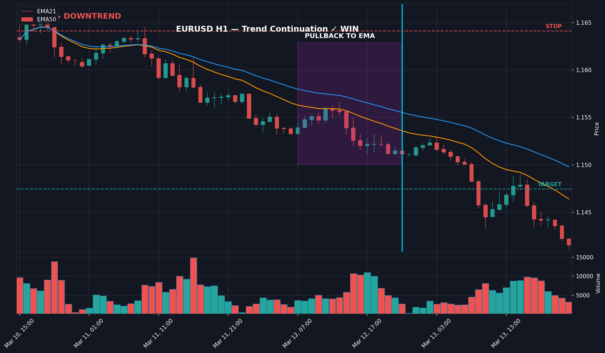
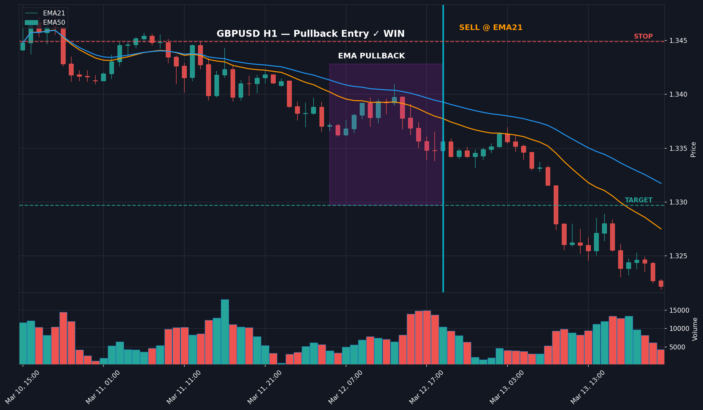
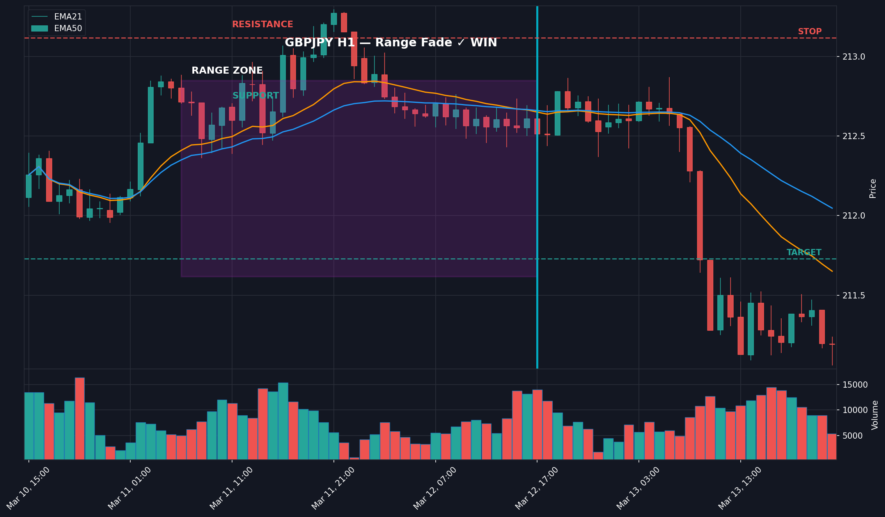
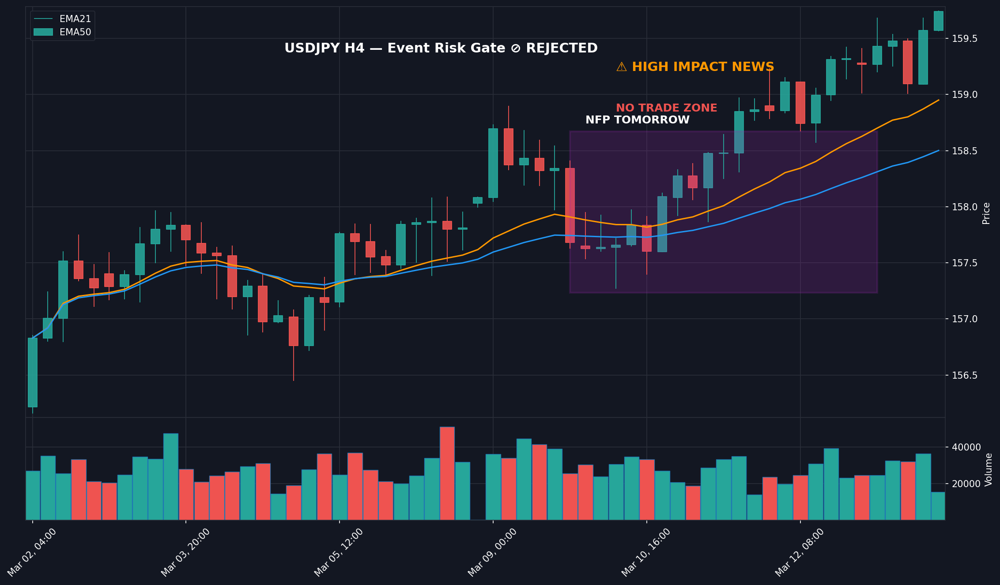
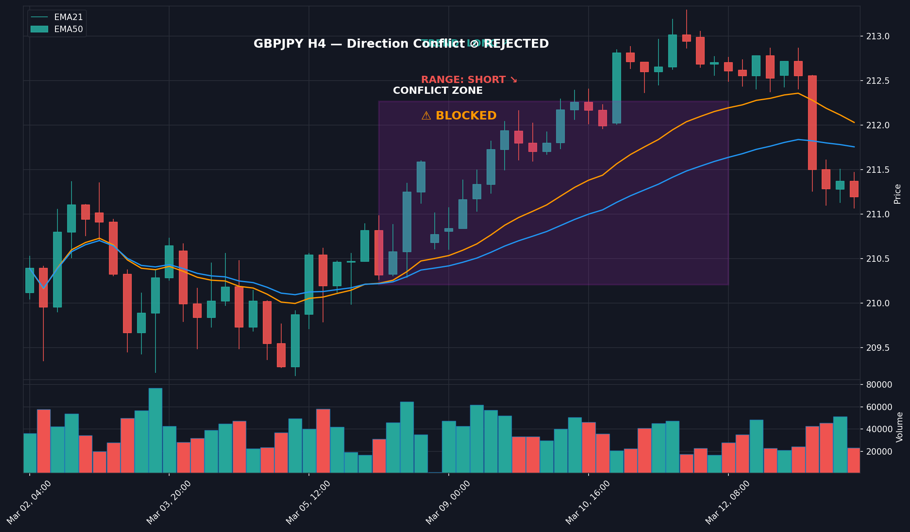
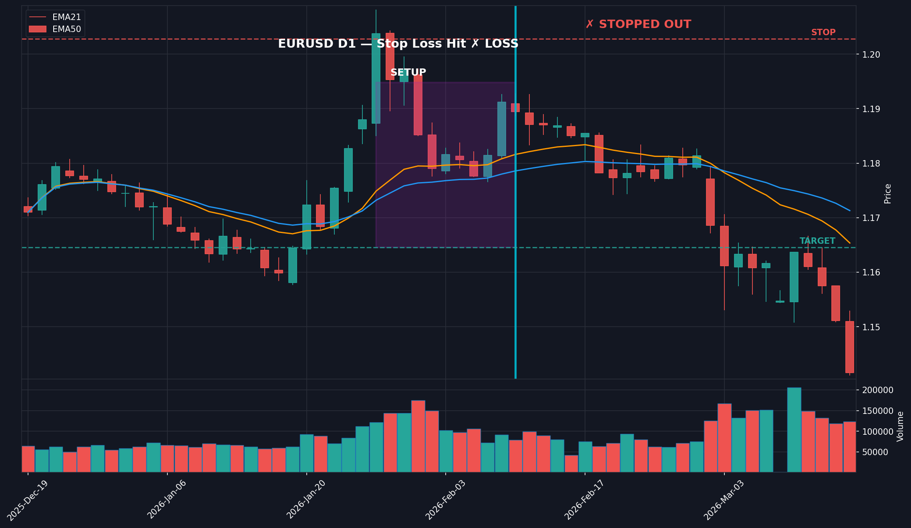
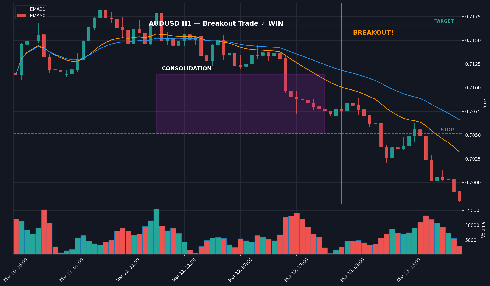
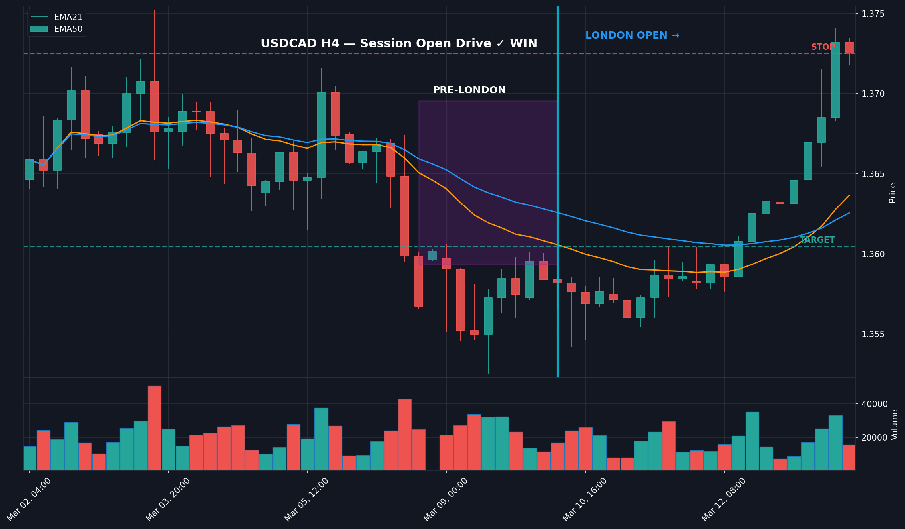
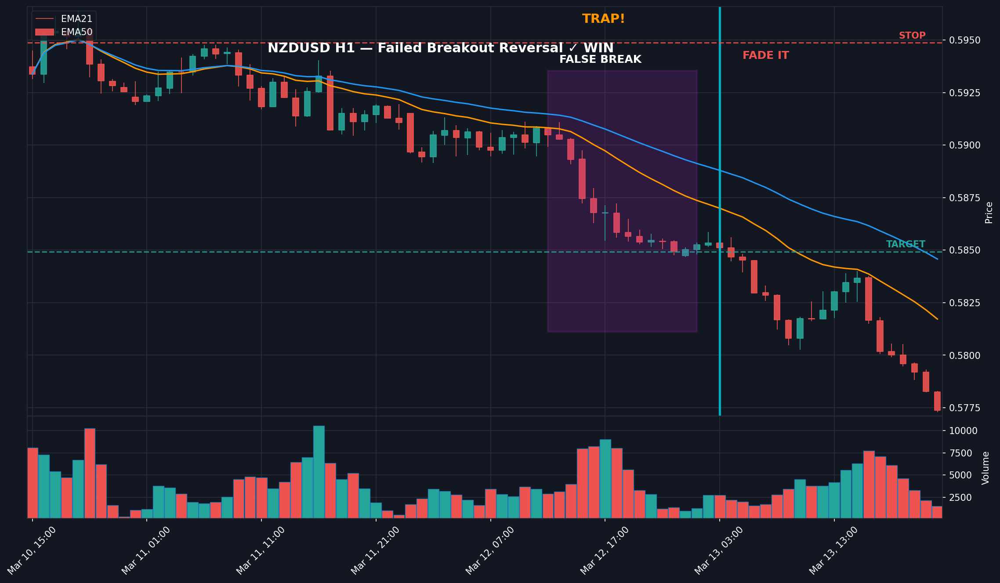
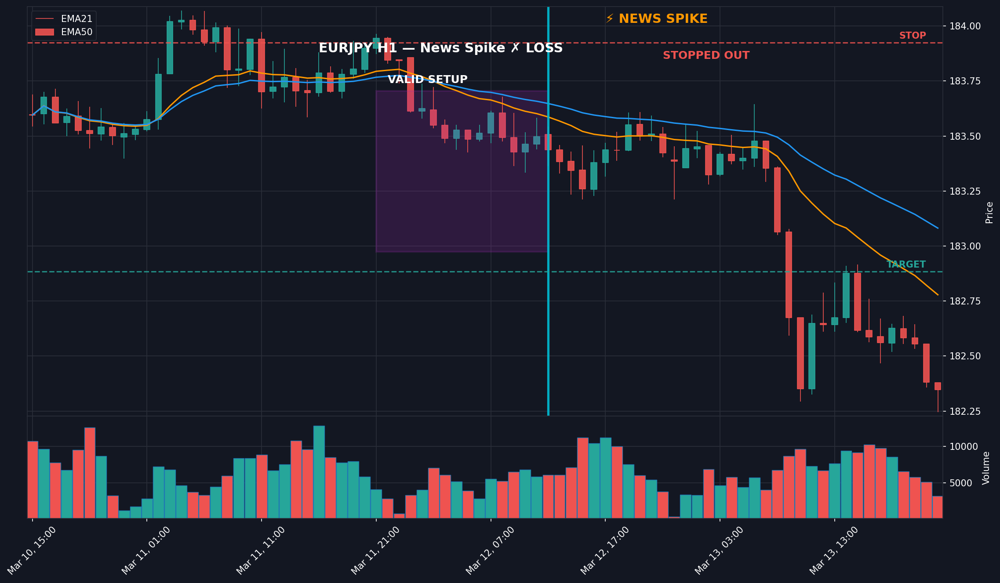
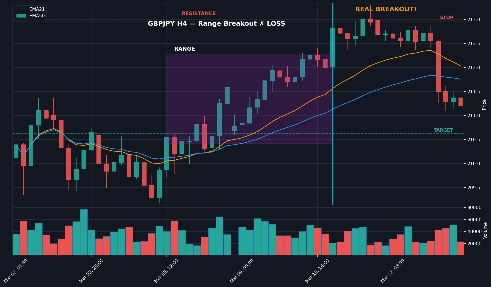
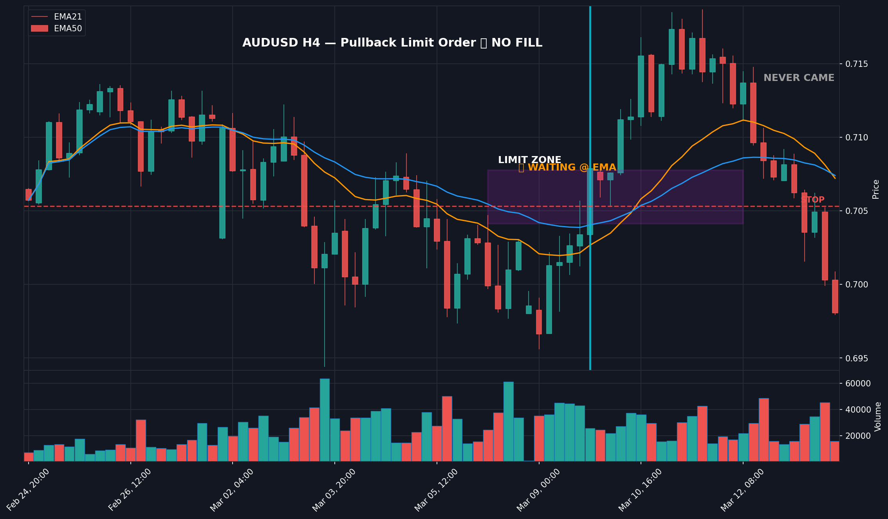